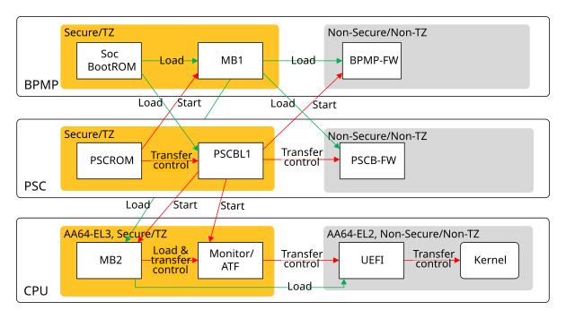
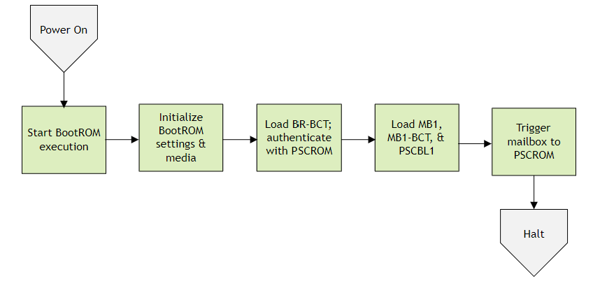
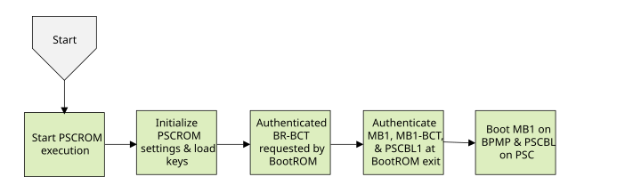
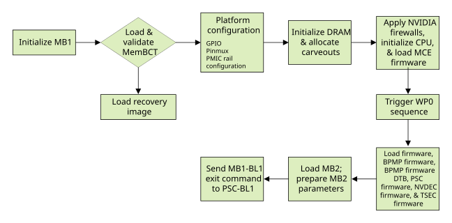
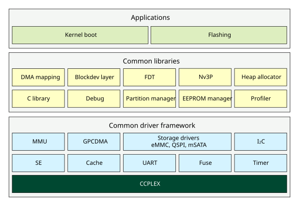
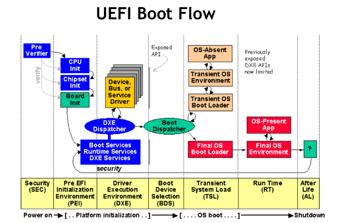
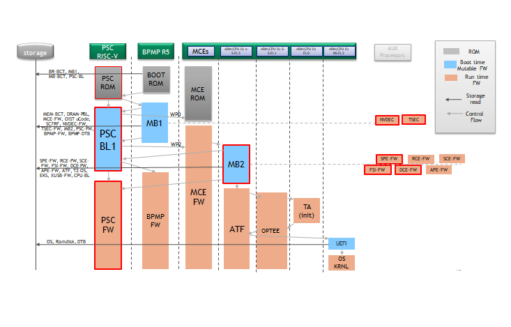

Jetson AGX Orin, Orin NX, and Orin Nano Boot Flow#
Boot flow is the sequence of operations that the Bootloader performs to initialize the SoC and boot NVIDIA® Jetson™ Linux. Here are the major operations that the Bootloader performs:
Initializing the storage devices, memory controller (MC), external memory controller (EMC), and CPU
Setting up security parameters
Loading and authenticating firmware components
Maintaining the chain of trust
Creating memory carveouts for various firmware components
Flashing the storage device
Booting to the operating system
Additionally, the Jetson boot software may perform other operations defined by product requirements, including but not limited to:
Initializing HDMI® or DisplayPort
Displaying a boot logo
The following diagram shows the flow of control in the boot software.

BootROM#
BootROM (BR) is hard-wired into the SoC. It starts executing as BPMP leaves the reset state. It initializes the boot media and loads BR-BCT, PSCBL1, Microboot1 (MB1) and MB1-BCT from storage, and then halts.
Up to four copies of the BootROM Boot Configuration Table (BR-BCT) can be stored at the start of the boot media. Each copy of BR-BCT is aligned on a device erase sector size boundary, with empty space between copies if necessary. The BR-BCT contains configuration parameters that BootROM uses for hardware initialization.
The BCT also contains information about Bootloader (MB1, MB1-BCT, and PSCBL), including:
Size
Entry point
Load address
Hash
BootROM uses this information to verify and load the components of Bootloader and MB1-BCT. The following diagram shows the boot flow:
{kind=link}

PSCROM#
Platform security controller (PSC) ROM is a hardware component in the SoC, and it starts running as soon as the processor is reset.
PSCROM holds the keys that are required for NVIDIA and OEM authentication and decryption. It provides authentication and decryption services to BootROM and audits the next stage boot on BPMP (for example, MB1) and PSC (for example, PSC-BL1).

MB1#
Microboot1 (MB1) runs on BPMP and is the first boot software component loaded by BR in AOTZRAM. It initializes certain parts of the SoC, including the CPU, and performs security configuration.
MB1 is signed and encrypted by an NVIDIA-owned key. The following diagram shows its flow of control:

MB1 is responsible for:
Platform configuration, including pinmux, GPIO, pad voltage, SCRs, and firewalls
Initializing the SDRAM based on the Memory BCT
Loading firmware, including the components that initialize the CPU complex (CCplex)
Programming the PMIC for enabling the
VDD_CPUrailCreating memory carveouts
Loading MB2, which is the next stage Bootloader
NVIDIA owns MB1, and provides it as a binary in the Jetson BSP package. You can configure its behavior for a specific platform through its Boot Configuration Table, MB1-BCT.
MB2#
MB2 is the Bootloader component that executes after MB1 and has the following variants:
MB2 Applet
MB2 for flashing, RCM (Development), and Coldboot
The processor on which MB2 runs determines which variant runs.
MB2 Applet#
The MB2 applet runs on BPMP (R5). It is responsible for detecting the type of Jetson device in use and fetching information about it. Tegraflash (running on host) uses this information to select the proper configuration files for re-flashing the device.
The key pieces of information that the applet retrieves include:
Chip information such as BR revision, SKU, sample, and RAM code based on fuse reads
Board related information stored in EEPROM
Customer section information of BCT on Auto platforms
MB2#
MB2 runs on CCPLEX, and is responsible for:
Flashing.
Cold-boot flashing: MB2-CCPLEX receives binaries from the host and flashes them one by one to the device.
RCM boot: MB2-CCPLEX receives binaries from the host and loads them directly into SDRAM for the boot flow components to execute.
The following diagram shows the components of MB2-CCPLEX.

UEFI#
Unified Extensible Firmware Interface (UEFI) is an industry specification that describes standard interfaces between platform firmware and the operating system. It replaces CBoot in the Jetson boot flow as the CPUBL for Jetson Linux devices.
Features of UEFI include:
With other specifications (SMBIOS, ACPI), it can load a generic OS without requiring any platform customization of the operating system.
It defines a standardized secure boot mechanism for authenticating third-party software (for example, operating systems and PCIe option ROMs).
It supports add-in card drivers via option ROMs, and integrates them with the system configuration user interface.
It defines standard methods for updating firmware.
The following diagram describes the major aspects of UEFI boot flow.

UEFI sources and compilation details for this release are available at NVIDIA/edk2-nvidia.
Cold Boot Sequence#
The following graphic shows the Boot firmware loading sequence and dependency during cold boot:
{kind=link}
